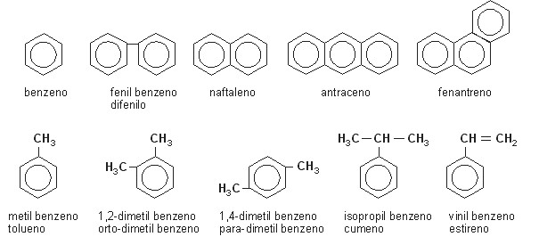

Hidrocarbonetos
Em química, um hidrocarboneto é um composto químico constituído por átomos de carbono e de hidrogênio unidos tetraedricamente por ligação covalente assim como todos os compostos orgânicos.

Os hidrocarbonetos naturais são compostos químicos constituídos apenas por átomos de carbono (C) e de hidrogênio (H) aos quais se podem juntar átomos de oxigênio (O), azoto ou nitrogênio (N) e enxofre (S), dando origem a diferentes compostos de outros grupos funcionais.
São conhecidos alguns milhares de hidrocarbonetos. As diferentes características físicas são uma consequência das diferentes composições moleculares. Contudo, todos os hidrocarbonetos apresentam uma propriedade comum: oxidam-se facilmente liberando calor.
Os hidrocarbonetos naturais formam-se a grandes pressões no interior da terra (abaixo de 150 km de profundidade) e são trazidos para zonas de menor pressão através de processos geológicos,onde podem formar acumulações comerciais (petróleo, gás natural, carvão etc). As moléculas de hidrocarbonetos, sobretudo as mais complexas, possuem alta estabilidade termodinâmica. Apenas o metano, que é a molécula mais simples (CH4), pode se formar em condições de pressão e temperatura mais baixas. Os demais hidrocarbonetos não são formados espontaneamente nas camadas superficiais da terra.
Cadeias carbônicas do hidrocarboneto
Os hidrocarbonetos tem uma série de cadeias sendo divididos em:
hidrocarbonetos alifáticos: neles, a cadeia carbônica é acíclica (ou seja, aberta), sendo subdividido em:
hidrocarbonetos cíclicos: possuem pelo menos uma cadeia carbônica fechada, subdivididos em:
aromáticos, que possuem pelo menos um anel aromático (anel benzênico) além de suas outras ligações. Hidrocarbonetos policíclicos de Von Baeyer
Ligações entre os hidrocarboneto
Os hidrocarbonetos tem uma série de divisões sendo:
- hidrocarbonetos saturados, englobando alcanos e cicloalcanos, que não possuem ligações dupla, tripla ou aromática;
- hidrocarbonetos insaturados, que possuem uma ou mais ligações dupla ou tripla entre átomos de carbono (entre eles os alcenos, alcadienos e cicloalcenos - com ligação dupla; alcinos - com ligações tripla -; e aromáticos)
O número de átomos de hidrogênio em hidrocarbonetos pode ser determinado, se o número de átomos de carbono for conhecido, utilizando as seguintes equações:
- Alcanos: CnH2n+2
- Alcenos: CnH2n
- Alcinos: CnH2n-2
- Ciclanos: CnH2n
- Ciclenos: CnH2n-2
Hidrocarbonetos geralmente líquidos geologicamente extraídos são chamados de petróleo (literalmente "óleo de pedra") ou óleo mineral, enquanto hidrocarbonetos geológicos gasosos são chamados de gás natural. Todos são importantes fontes de combustível.
Hidrocarbonetos são de grande importância econômica porque constituem a maioria dos combustíveis minerais (carvão, petróleo,gás natural, etc.) e biocombustíveis como o plásticos, ceras, solventes e óleos. Na poluição urbana, esses compostos - juntamente com NOx e a luz solar - contribuem para a formação do ozônio troposférico.[1]